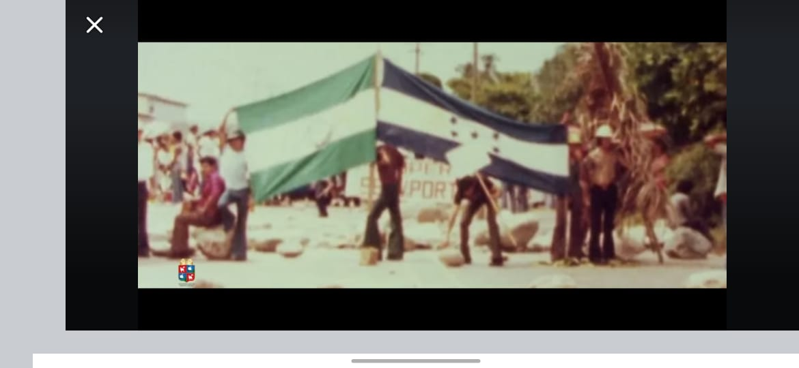

Historia - CEMG Franklin Delano Roosevelt
Fundación del Instituto
Después de varios intentos por crear un Instituto de Educación Media, un grupo de personas de la comunidad, apoyados por la Logia Masónica y el Club Rotario, se constituyó en Sociedad de Padres de Familia con el objetivo primordial de fundar el instituto.

Integrantes de la Sociedad de Padres de Familia:
- Br. Alberto Carias Quiroz – Presidente
- Dr. Jacobo Núñez Hércules – Vicepresidente
- Coronel José Urbizo – Secretario
- Sr. Rafael Prince – Tesorero
- Doña Catalina Castillo – Vocal No. 1
- Don Salomón Castellón – Vocal No. 2
- Profesora Rosa Estrada – Vocal No. 3
- Profesor Tobías Valencia – Vocal No. 4
- Don José Dolores Cubero – Vocal No. 5
Esta sociedad presentó ante el Poder Ejecutivo, mediante su apoderado legal, el notario Samuel Da-Costa Gómez, la solicitud para legalizar la apertura del instituto. La personería fue concedida mediante el acuerdo No. 1995 del 26 de abril de 1944.
Autorización Oficial
Mediante el Acuerdo No. 1030, fechado el 26 de junio de 1945 en el Palacio Nacional de Tegucigalpa, se autorizó el funcionamiento del Instituto Normal Franklin Delano Roosevelt en Puerto Cortés.
Carreras iniciales autorizadas:
- Bachiller en Ciencias y Letras
- Maestro en Enseñanza Primaria Urbana
- Perito Mercantil y Contador Público
El apoderado especial, Lic. Roberto Ramírez, presentó:
- Certificación del nombramiento del Profesor Rubén Alvarado Peña como Director
- Constancia de su experiencia de 16 años en el Instituto Normal José Trinidad Reyes
- Certificación de que la Asociación de Padres de Familia contaba con los recursos necesarios para la instalación del instituto
Ubicaciones del Instituto
El instituto funcionó inicialmente en el edificio de la Logia Morazánica, luego en los bajos de la Comandancia de Armas, después en el pabellón de la alegría del Hotel Palmera, y más tarde en “la famosa mulera”, de la cual se recuerdan muchas historias. Finalmente, se trasladó a modernas instalaciones con enfoque técnico-pedagógico.
Origen del Nombre
Aunque no se sabe con certeza por qué se eligió el nombre Franklin D. Roosevelt, se mencionan dos versiones:
- Un organizador de origen norteamericano ayudó significativamente en la apertura, y se quiso honrar su gesto nombrando el instituto en honor a un compatriota.
- Admiración por Franklin D. Roosevelt, único presidente de EE. UU. que gobernó cuatro periodos (1933–1945), junto a su esposa luchó por la democracia y la libertad mundial.
Legado
Más allá del nombre, lo importante es el orgullo y amor que sienten los egresados, el personal laboral, los padres de familia y el pueblo en general por el instituto, símbolo de sabiduría en la comunidad.